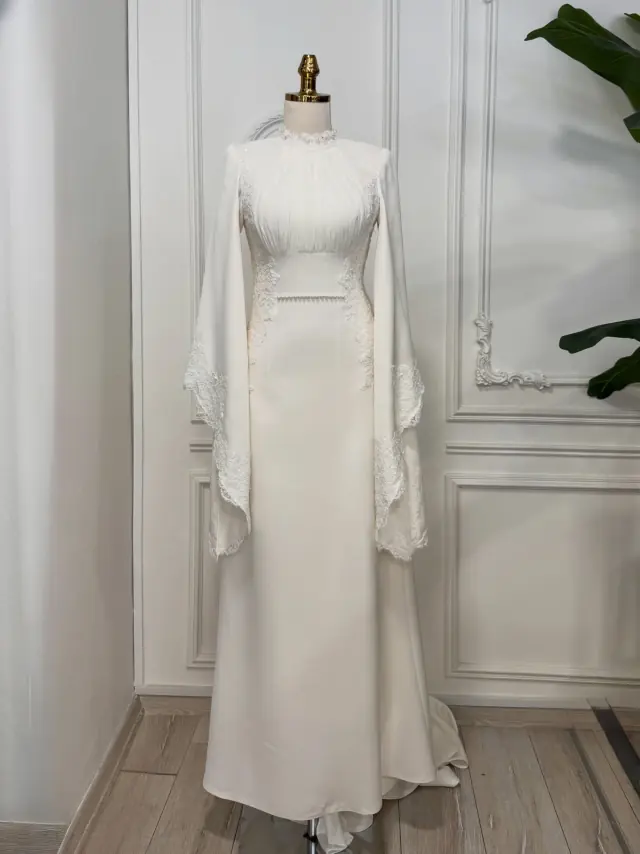
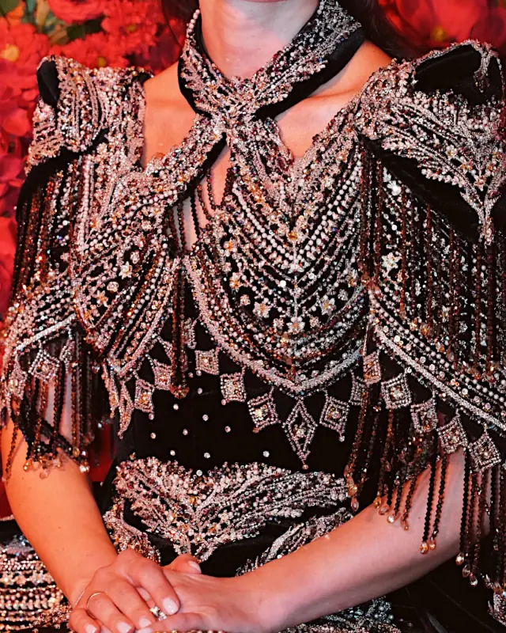
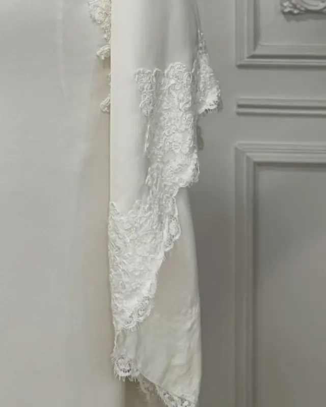
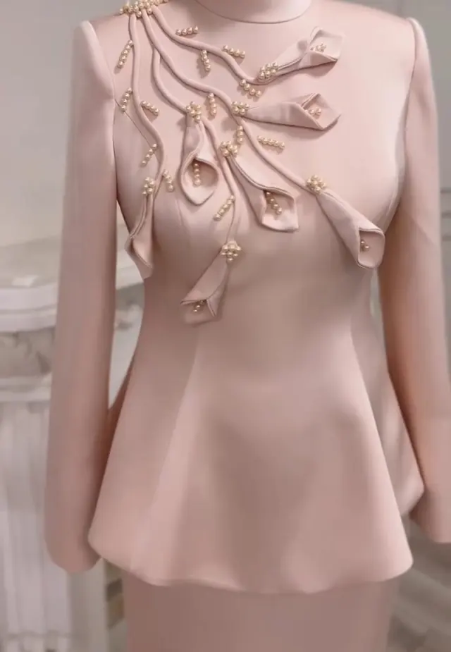
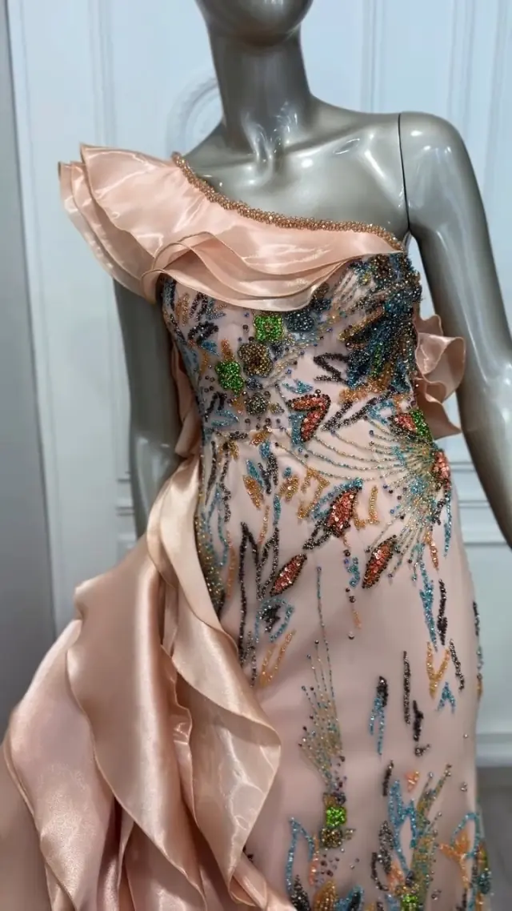

Föy 01Gelinlik

- Kesim
- Tesettür, açık
- Seçenek
- Satılık, kiralık, özel dikim
Prova · Ümraniye atölyesi

Her tasarım kendi hikâyesiyle başlar. Kumaş seçimi, prova süreci ve ince işçilikle yalnızca size ait bir görünüm ortaya çıkar.
Showroom randevunuzu oluşturunSüreç
Showroomda modelleri, kumaşları ve renkleri birlikte inceliyoruz.
Özel dikimde ölçünüz alınır; satılık ve kiralıkta bedene bakılır. 36-40 beden aralığında sipariş üzerine.
Kumaş, renk ve işleme seçilir: taş, boncuk, sırma ya da dantel.
Elbise üzerinizde şekillenir, düzeltmeler provada yapılır.

Elbiseniz özel gününüze hazır. İstanbul dışındaysanız online dikim de var.
Özel elişleme
Taş, boncuk, sırma, dantel. Showroomda kumaşa dokunarak seçiyorsunuz; işte birkaçı.

N° 01
Gümüş taş
siyah kadife

N° 02
Altın sırma
siyah kadife

N° 03
Dantel
beyaz elbise

N° 04
Boncuk dizisi
lacivert kadife
Ne dikiyoruz
Föy 01Gelinlik

Föy 02Kına

Föy 03Nişan, nikâh

Föy 04After, davet

Gelinlerimiz

Kınanın zarafeti, Büşra gelinimizin güzelliğiyle bambaşka.Kaftanın dosyası


Hizmetler
Randevu fişiÜmraniye